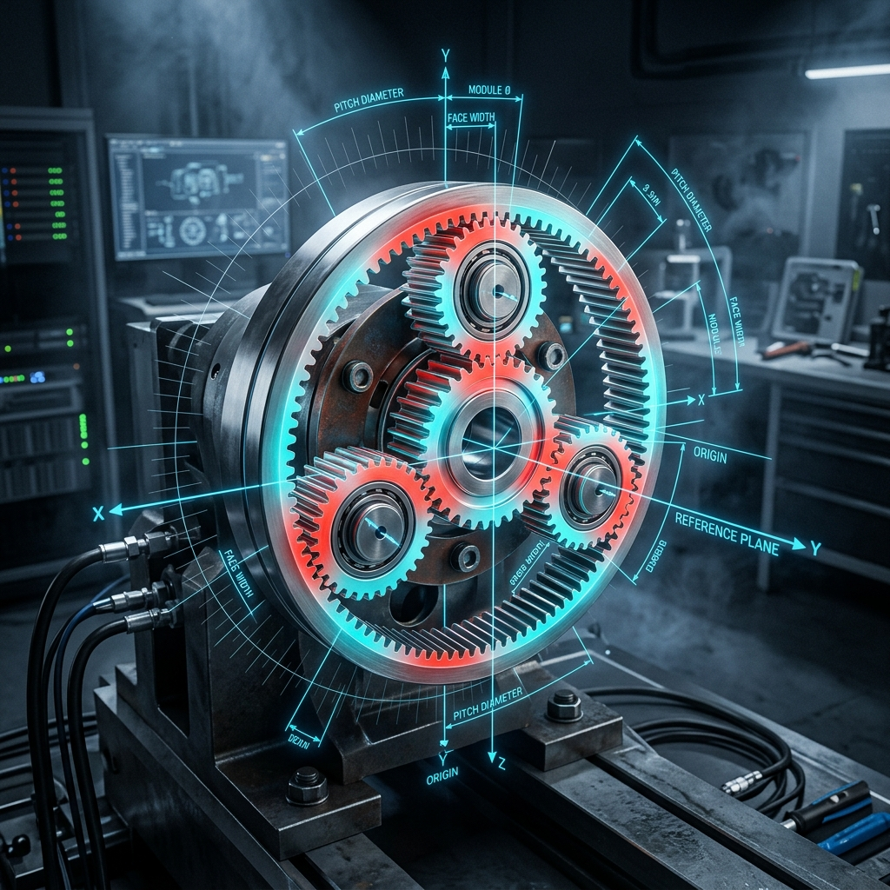

4D Parametric CAD Modeler
An interactive, browser-based solid prototyping engine powered by dynamic Constructive Solid Geometry (CSG). Modify parameters in real-time and export production-ready STL models instantly.
Launch Modeler Workspace →
Solid Modeling System
Perform complex CSG Boolean cuts and additions in real-time right inside your browser window.
Solid Primitives
Instantly place Box, Sphere, Cylinder, or custom Extruded Text blocks into the workspace. Control size, positions, and coordinates dynamically.
CSG Boolean Operations
Apply solid logical commands to geometries: Union (merge parts), Subtract (cut slots, pockets, or holes), or Intersect (retain overlaps).
Watertight STL Export
Export models to binary STL files optimized for immediate CAM importing, CNC milling, or 3D printing software slicing.
4D Structural Load Simulation
Analyze spatial stress boundaries and kinematic mesh operations dynamically over time (4D). The engine evaluates how dimensional variations affect safety factor loads, mechanical shear, and rotation tolerances.
Design with exact safety tolerance feedback. Visual stress color gradients change in real-time in response to parametric coordinates adjustments, letting engineers inspect structural limits before generating G-code.

Engineering & CSG Operations Guide
1. Constructive Solid Geometry (CSG) Basics
Constructive Solid Geometry (CSG) is a solid modeling technique that allows you to construct complex 3D shapes from simple geometric primitives. By applying boolean operations—such as Union (combining bodies), Difference/Subtraction (cutting holes or cavities), and Intersection (isolating overlapping volumes)—you can design highly detailed mechanical brackets, custom adapter plates, and specialized lathe work. Unlike mesh editing tools which deal directly with surface vertices, CSG models maintain solid volume guarantees, ensuring that exported parts are watertight and ready for physical manufacturing.
Our modeler executes these boolean CSG algorithms directly inside your browser. Because the models are represented mathematically, you can modify any dimension at any point in the history tree, and the modeler will automatically re-evaluate the boolean chain to rebuild the geometry. This makes our tool a true parametric modeler suitable for rapid engineering prototyping.
2. Detailed Modeling Workflow
Follow this step-by-step workflow to design your custom mechanical components in the workspace:
- Insert a Primitive: Click the "+ Box", "+ Polygon", "+ Sphere", or "+ Text" buttons in the top toolbar to place a base shape in the 3D viewport.
- Set Parameters: Select the shape in the Feature Tree (left sidebar). In the Properties panel (right sidebar), adjust its width, length, height, or positional coordinates (X, Y, Z).
- Apply Solid Cuts: To cut a bore or slot, place a cylinder or box inside your base shape. In the Properties panel, change its operation mode from "Union" to "Subtract". The modeler will instantly subtract that volume from the parent body.
- Add Labels and Engravings: Add a "+ Text" block, input your custom label, position it slightly protruding from or recessed into a flat face, and set the operation to Union (for embossed text) or Subtract (for engraved text).
- Inspect History Tree: Use the Feature Tree to click through, rename, or delete elements. You can drag and rearrange items in the list to modify the order of boolean operations.
- Download STL Output: Click "STL Out" to compile your solid model and save it to your computer.
3. Optimization Tips for CNC & 3D Printing
To ensure your CAD designs translate perfectly to physical parts, keep the following manufacturing guidelines in mind:
- Dimensional Units: All numerical inputs in the modeler represent measurements in millimeters (mm). Slicers (PrusaSlicer, Cura) and CAM engines (Fusion 360, Vectric) import STL files in millimeters by default, ensuring exact scale matching.
- Facet Resolution: When adding regular polygons or cylinders to act as circular holes or round bosses, set the number of subdivisions (sides) appropriately. 32-48 sides are ideal for standard 3D printers, while 64-96 sides are recommended for tight-tolerance CNC machining. Avoid setting values above 128 to prevent slowdowns.
- Avoid Non-Manifold Geometry: Ensure subtracted cutouts extend completely past the outer boundaries of base shapes. Leaving a cylinder flush with a box face can occasionally cause floating-point alignment errors (coincident faces) in CSG rendering.
- JSON Design Backups: Before exporting your STL, click the "Save" button. This downloads a lightweight `.json` description file containing your exact parametric history tree, allowing you to reload and edit the model in the future.
Frequently Asked Questions
Is the CAD Modeler free? Yes, the 3D Parametric CAD Modeler is 100% free and open-source. There are no registration forms, usage limits, or hidden fees. All processing is done locally in your browser.
Are my designs private and secure? Absolutely. Unlike cloud-based CAD platforms, all 3D geometry compiling, rendering, and file downloading are executed locally on your machine. Your data never leaves your computer and is never sent to our servers.
Can I import standard CAD files like STEP or IGES? No, this modeler is a lightweight CSG builder designed for rapid prototyping and local parametric model generation. It is designed to export models rather than edit heavy external CAD formats.
How do I undo a mistake? The toolbar includes full Undo and Redo controls. Alternatively, you can use the standard keyboard shortcuts (Ctrl+Z and Ctrl+Shift+Z) or select any feature in the tree to delete or modify its parameters directly.